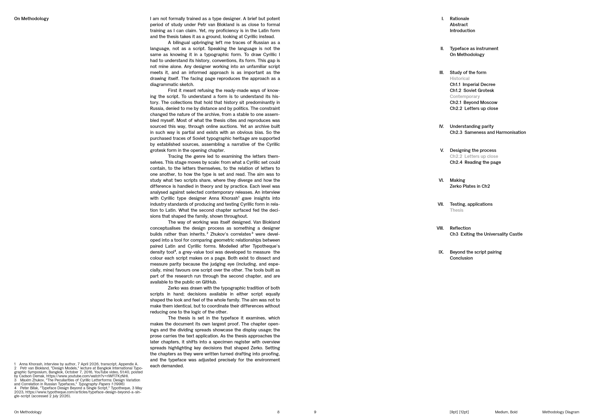


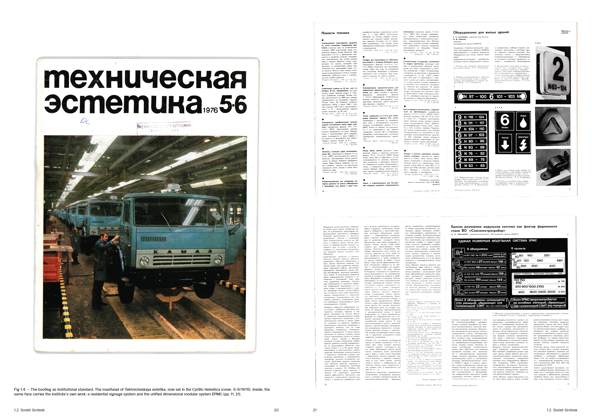
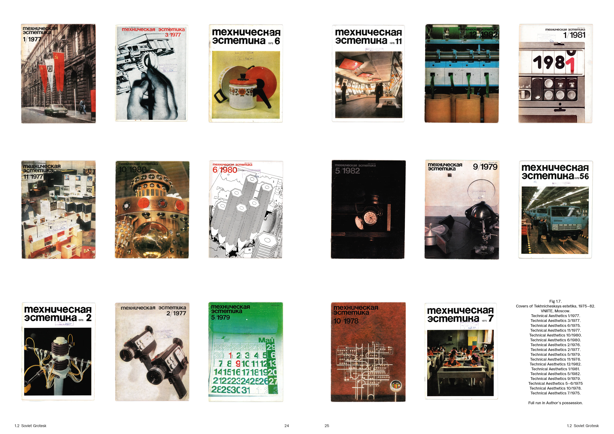
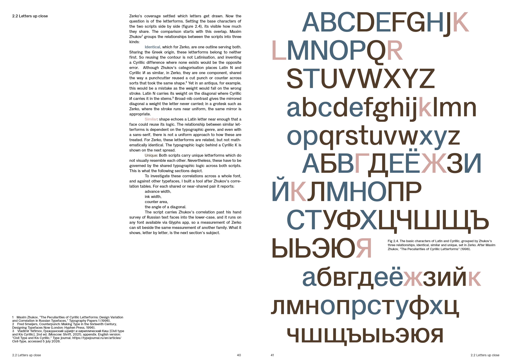
Zerko Grotesk: Script Parity as a Design Condition, Publication, 2026
Kirill Konstantinov (, London)
Kirill Konstantinov is a graphic designer based in London. His work spans editorial, identity and type. Every project starts from a premise, whether a publication, an identity or a fiction. Alongside commissioned work he writes and designs his own publications, draws the typefaces they are set in, and builds the sites himself.
0%




Zerko Grotesk: Script Parity as a Design Condition, Publication, 2026
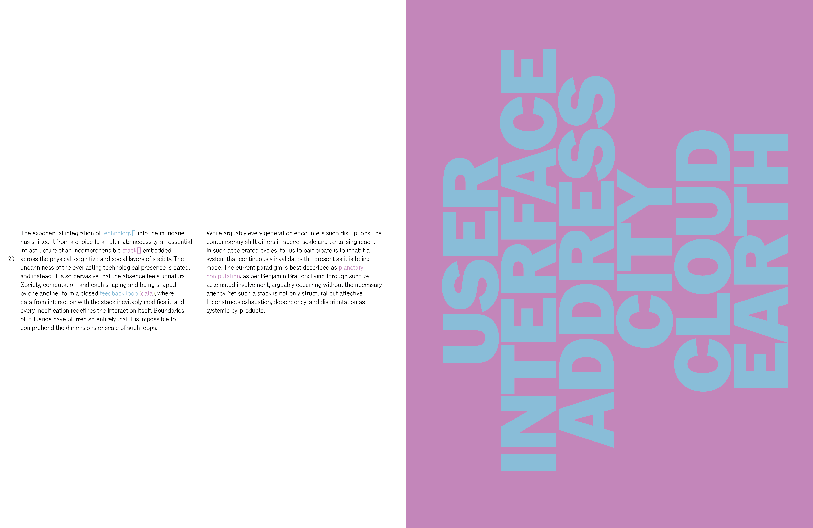
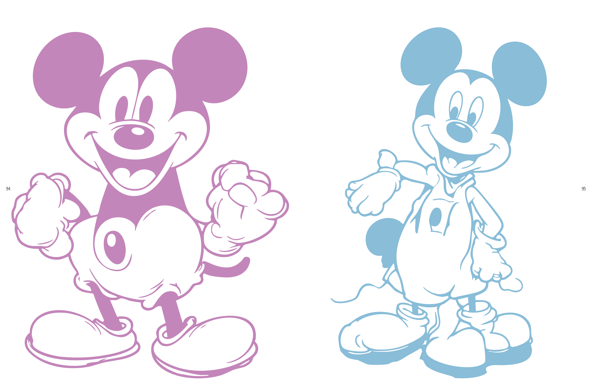
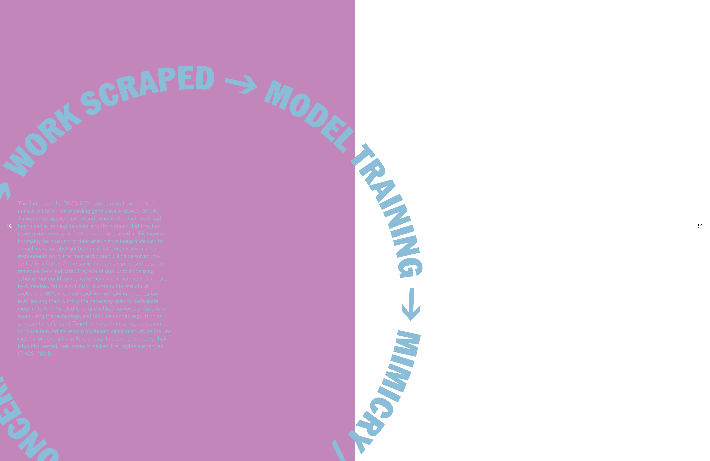
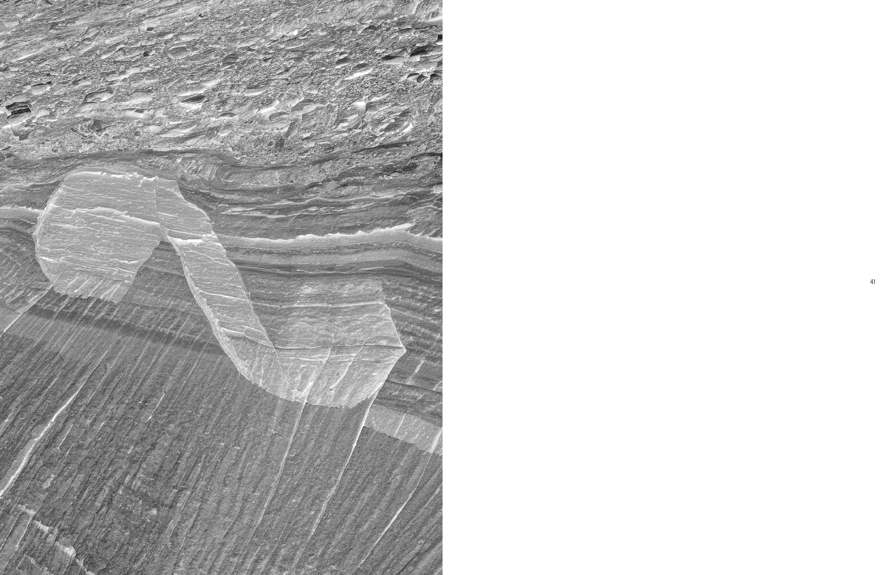
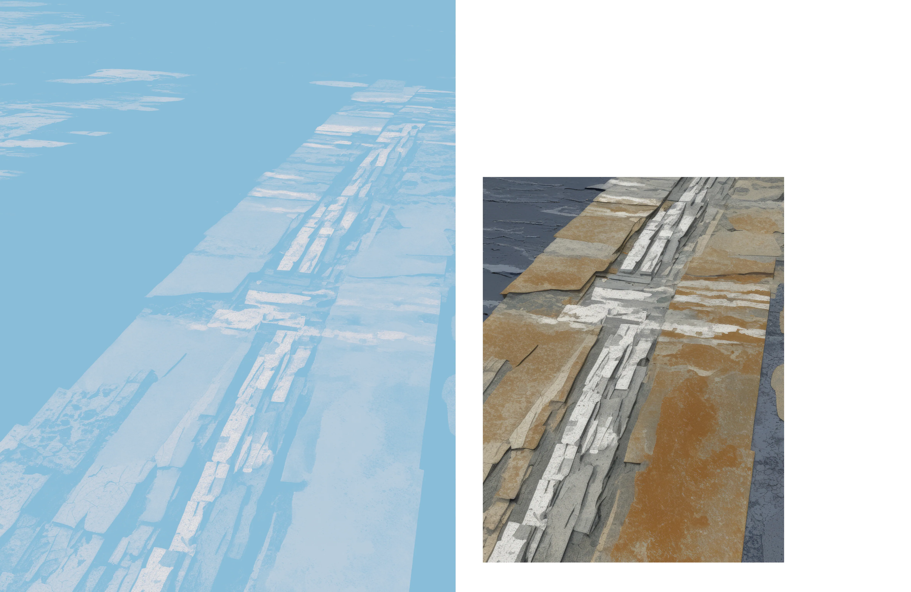
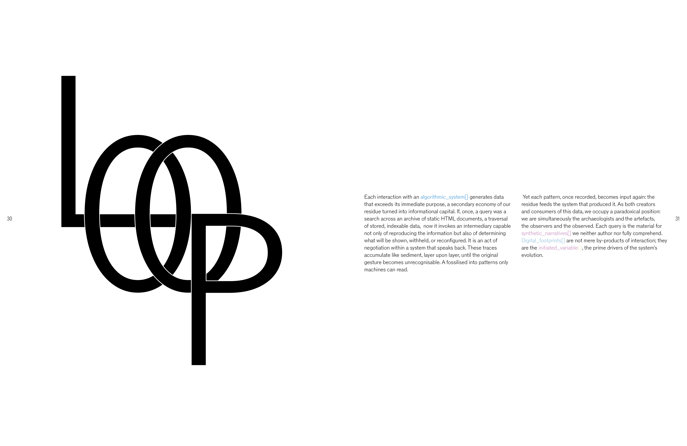
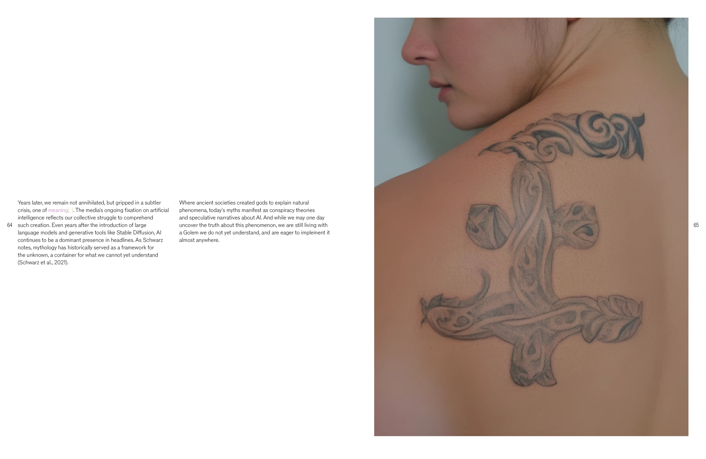
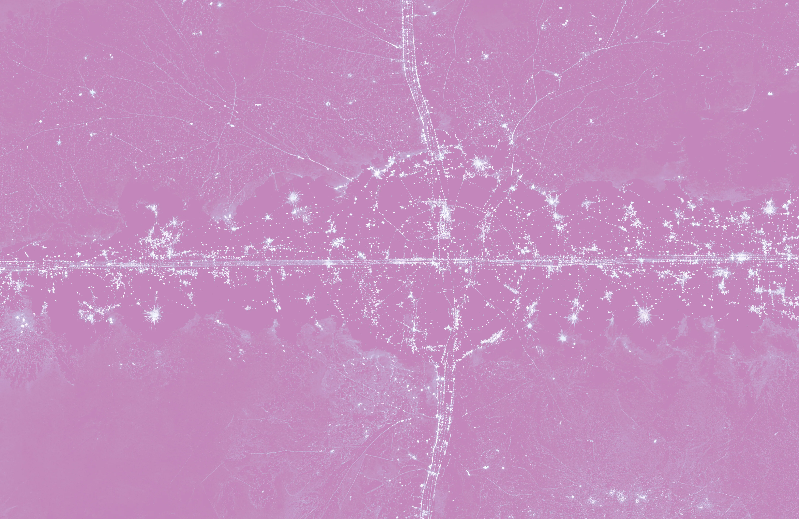
As Seen In, Publication, 2025


JRAY, Sleeve, 2026

LOTV × WASTE!, Signage, 2026


RADA — Birthday Bash, Poster, 2025


RADA — Corsica, Poster, 2025
Sentra, Identity, 2025